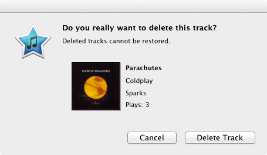

EasyRater Help
Overview
EasyRater is designed to get all your music tracks rated. It uses the following guidelines to give you the best
experience:
- Streamlined with your workflow - Unobstrusively allow you to rate your songs without having to stop what you are
currently doing.
- Clearly indicate current rating - You need to see if the song is currently rated if you want to set it.
- Minimize screen real estate usage - We don't want to waste any precious screen space.
- Eliminate songs unworthy of a rating - Sometimes a song should rather get deleted.
- (Extra) Highlight your favorite song - When you see that indicator lighting up, get ready for one of your
favorites.
See song rating
The application is driven by the status bar item:
You can expect the following values in the preview icon:
- - A song is playing that has not yet been rated
- - A song rated with 1 stars
- - A song rated with 2 stars
- - A song rated with 3 stars
- - A song rated with 4 stars
- - A favorite is playing
Set song rating
Click on the icon to open to the application menu:
The menu is divided into three sections:
- Delete - Delete the currently playing song
- Rating - Select the desired rating for the song
- Quit - Quit the application
Delete song
From the status bar open the menu and select the "Delete" menu item.
An alert window will pop up to make sure you really want to delete the track:

WARNING: Deleted items are permanently deleted, they do NOT go to the
trash!
Quit application
From the status bar open the menu and select the "Quit" menu item.
Known Issues
Indicator not updated if iTunes is paused
If iTunes is paused no notifications are sent to EasyRater.
No known fixes currently